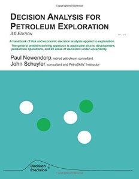

Knowledge Content Library
141
Incorporating Learning Models in Structuring and Valuing R&D Projects
Presented by Phil Beccue (Baxter) at 2004 DAAG Conference in San Francisco. Real options example using decision trees for evaluation of "learning models".
continue to: decisionprofessionals.com
145
Decision Analysis to Evaluate Clinical Proof-of-Principle Trial Design for a New Drug
Presented by Vish Viswanathan and Rick Bayney (Johnson & Johnson) at 2004 DAAG Conference in San Francisco. Example of value of information approach to evaluation of a trial design decision.
continue to: decisionprofessionals.com
379
How to Value Imperfect Information
Presented by Ron Allred and Jon Anker (ConocoPhillips) at 2003 DAAG Conference in Houston. Provides and overview of value-of-information methods, with trees and simulation.
380
Are You Sure Your Proof of Concept Studies Add Value?
Presented by David Swank and Lee Hodge (GlaxoSmithKline) at 2003 DAAG Conference in Houston. Provides and overview of value-of-information methods applied to proof-of-concept studies in pharma.
continue to: decisionprofessionals.com
381
Value of Imperfect Information with a Risk Adverse Decision Maker
Presented by Brian Putt (Chevron) at 2003 DAAG Conference in Houston. Provides and overview of value-of-information methods where the decision maker is risk averse.
continue to: decisionprofessionals.com
112
Patterns in Oil E&P VOI Decisions
Presented by Peter Cunningham (Decision Frameworks) at 2002 DAAG Conference in Las Vegas. Discussion of Value of Information situations and basic analysis process applied to E&P problems.
continue to: decisionprofessionals.com
120
Implementation of DA Projects: Three Fables
Presented by Stuart Harris (GlaxoSmithKline) at 2002 DAAG Conference in Las Vegas. Presents three examples of decisions in GSK, with a somewhat humorous take on the outcomes and lessons learned.
continue to: decisionprofessionals.com
109
Value of Information Misapplied
Presented by Phil Kerig and Brent Weber (Conoco) at 2001 DAAG Conference in Houston. Lessons learned from application of Value of Information - top five VOI pitfalls.
continue to: decisionprofessionals.com
81
How Options Thinking Can Improve Decisions With No Calculation or Jargon
Presented by Jerry Lieberman (General Motors) at 2000 DAAG Conference in Calgary. Discussion of how thinking in options terms can lead to better decisions, without applying formal options theory.
continue to: decisionprofessionals.com
82
Technology Choice When Delay is Costly
Presented by Mark Cronshaw (MediaOne) at 2000 DAAG Conference in Calgary. Analysis of timing of investing in technology, incorporating options type analysis with decision trees.
continue to: decisionprofessionals.com
83
Real Options in Practice: Two Examples from the Energy Sector
Presented by Sue Lisowski (Texaco) at 2000 DAAG Conference in Calgary. Examples of real options applied to a new technology decision and to an offshore development decision.
continue to: decisionprofessionals.com
84
Proof of Concept in Drug Development
Presented by Stuart Harris (GlaxoSmithKline) at 2000 DAAG Conference in Calgary. Application of value of imperfect information analysis to proof of concept in drug development.
continue to: decisionprofessionals.com
85
Lessons about Options from a Pharmaceutical R&D Project
Presented by Tom Spradlin (Eli Lilly) at 2000 DAAG Conference in Calgary. Discussion of options applications to the phased decisions inherent in the drug development cycle.
continue to: decisionprofessionals.com
77
Parametric Modeling in Decision Analysis
Presented by Gerald Bush (Decision Strategies) at 1999 DAAG Conference in Orlando. Illustrates the use of parametric analysis of commodity pricing as an alternative to 10-50-90 assessments. The different perspective led to a different valuation and decision.
continue to: decisionprofessionals.com
158
Handbook of Decision Analysis

by Gregory S. Parnell, Terry A. Bresnick, Steven N. Tani, Eric R. Johnson (SDP Fellows)
Fills a gap in decision analysis literature, featuring both soft personal/interpersonal skills and the hard technical skills involving mathematics and modeling.
Fills a gap in decision analysis literature, featuring both soft personal/interpersonal skills and the hard technical skills involving mathematics and modeling.
continue to: amazon.com
152
Decision Analysis for the Professional
by John Celona and Peter McNamee (SDP Fellows)
You can purchase on Amazon or download a free copy of this book in PDF format by clicking below.
You can purchase on Amazon or download a free copy of this book in PDF format by clicking below.
continue to: smartorg.com
154
Making Hard Decisions

by Robert T. Clemen (SDP Fellow) and Terence Reilly
Updated 3rd edition, with software and tutorials in Palisade's DecisionTools Suite.
Updated 3rd edition, with software and tutorials in Palisade's DecisionTools Suite.
continue to: cengagebrain.com
177
Decision Analysis for Petroleum Exploration

by Paul Newendorp, John Schuyler, Timothy Nieman
A guide to risk and economic decision analysis applied to exploration.
A guide to risk and economic decision analysis applied to exploration.
continue to: amazon.com
198
Risk Assessment and Decision Analysis with Bayesian Networks

by Norman Fenton and Martin Neil
Explains how to incorporate knowledge with data to develop and use causal models of risk that provide powerful insights and better decision making.
Explains how to incorporate knowledge with data to develop and use causal models of risk that provide powerful insights and better decision making.
continue to: amazon.com
532
Estimating Predictive Probability of Success
Shaun Comfort, Publications (Journal Article)